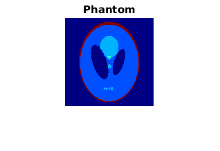
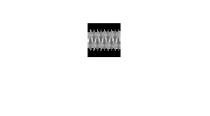
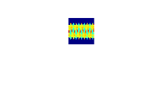
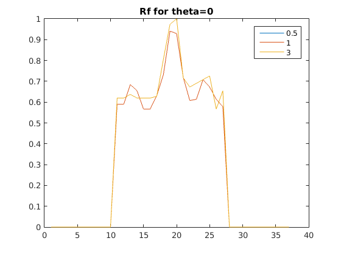
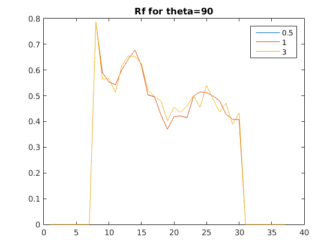

phantom_img = phantom(128);
figure(1);
imshow(phantom_img);
title('Phantom');
[t,theta,radon_data1] = myRadonTrans(phantom_img,0.5);
[~,~,radon_data2] = myRadonTrans(phantom_img,1);
[~,~,radon_data3] = myRadonTrans(phantom_img,3);
combinedData = [radon_data1(:); radon_data2(:); radon_data3(:)];
minVal = min(combinedData);
maxVal = max(combinedData);
radon_data1 = (radon_data1 - minVal)/(maxVal-minVal);
radon_data2 = (radon_data2 - minVal)/(maxVal-minVal);
radon_data3 = (radon_data3 - minVal)/(maxVal-minVal);
imwrite(radon_data1,'../images/d1.png');
imwrite(radon_data2,'../images/d2.png');
imwrite(radon_data3,'../images/d3.png');
myNumOfColors = 200;
myColorScale = (0:1/(myNumOfColors-1):1)';
myColorScale = repmat(myColorScale,1,3);
figure(2);
colormap('jet')
imshow(radon_data1);
colormap('jet')
truesize
figure(3);
imshow(radon_data2);
colormap('jet')
truesize
figure(4);
imshow(radon_data1);
colormap('jet')
truesize
s1_0 = radon_data1(:,1);
s1_90 = radon_data1(:,19);
s2_0 = radon_data2(:,1);
s2_90 = radon_data2(:,19);
s3_0 = radon_data3(:,1);
s3_90 = radon_data3(:,19);
figure(5);
plot([s1_0,s2_0,s3_0]);
legend('0.5','1','3');
title('Rf for theta=0');
figure(6);
plot([s1_90,s2_90,s3_90]);
legend('0.5','1','3');
title('Rf for theta=90');
    